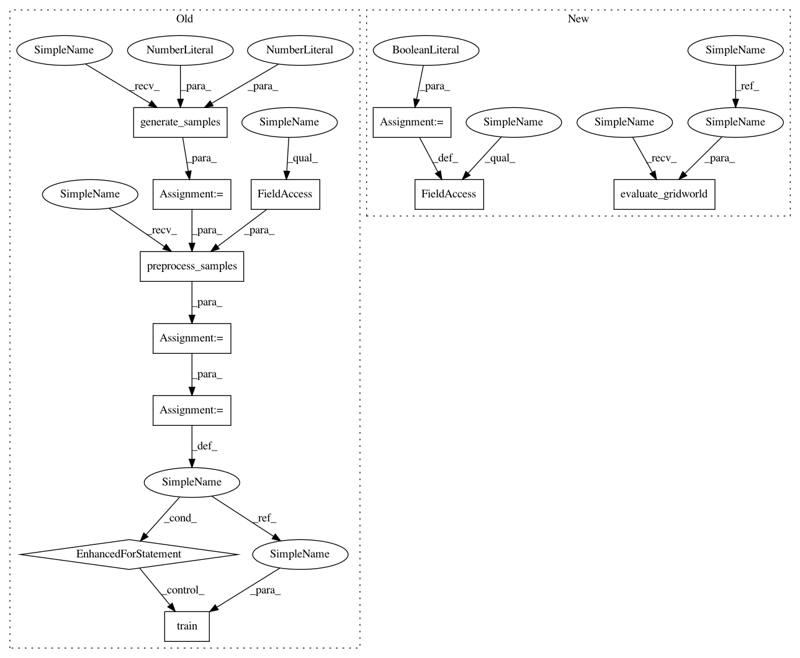

e5a659aa52c02eed0368d917a66cc8afb4c9fbf8,ml/rl/test/gridworld/test_gridworld_parametric.py,TestGridworldParametric,_test_trainer_sarsa,#TestGridworldParametric#Any#Any#Any#,153
Before Change
self, use_gpu=False, use_all_avail_gpus=False, modular=False
):
environment = GridworldContinuous()
samples = environment.generate_samples(100000, 1.0, DISCOUNT)
get_trainer_func = (
self.get_modular_sarsa_trainer if modular else self.get_sarsa_trainer
)
trainer = get_trainer_func(
environment, use_gpu=use_gpu, use_all_avail_gpus=use_all_avail_gpus
)
evaluator = GridworldContinuousEvaluator(
environment, False, DISCOUNT, False, samples
)
tdps = environment.preprocess_samples(
samples, self.minibatch_size, use_gpu=use_gpu
)
for tdp in tdps:
trainer.train(tdp)
get_predictor_func = (
self.get_modular_predictor if modular else self.get_predictor
)
predictor = get_predictor_func(trainer, environment)
After Change
def _test_trainer_sarsa(
self, use_gpu=False, use_all_avail_gpus=False, modular=False
):
environment = GridworldContinuous()
evaluator = GridworldContinuousEvaluator(
environment,
assume_optimal_policy=False,
gamma=DISCOUNT,
use_int_features=False,
)
if modular:
// TODO: test save/load once it"s implemented
self.test_save_load = False
trainer, exporter = self.get_modular_sarsa_trainer_exporter(
environment, None, use_gpu, use_all_avail_gpus
)
else:
trainer, exporter = self.get_sarsa_trainer_exporter(
environment, None, use_gpu, use_all_avail_gpus
)
self.evaluate_gridworld(environment, evaluator, trainer, exporter, use_gpu)
def test_trainer_sarsa(self):
self._test_trainer_sarsa()
In pattern: SUPERPATTERN
Frequency: 3
Non-data size: 11
Instances
Project Name: facebookresearch/Horizon
Commit Name: e5a659aa52c02eed0368d917a66cc8afb4c9fbf8
Time: 2018-10-24
Author: jjg@fb.com
File Name: ml/rl/test/gridworld/test_gridworld_parametric.py
Class Name: TestGridworldParametric
Method Name: _test_trainer_sarsa
Project Name: facebookresearch/Horizon
Commit Name: e5a659aa52c02eed0368d917a66cc8afb4c9fbf8
Time: 2018-10-24
Author: jjg@fb.com
File Name: ml/rl/test/gridworld/test_gridworld_parametric.py
Class Name: TestGridworldParametric
Method Name: _test_trainer_sarsa
Project Name: facebookresearch/Horizon
Commit Name: e5a659aa52c02eed0368d917a66cc8afb4c9fbf8
Time: 2018-10-24
Author: jjg@fb.com
File Name: ml/rl/test/gridworld/test_gridworld_ddpg.py
Class Name: TestGridworldContinuous
Method Name: _test_ddpg_trainer
Project Name: facebookresearch/Horizon
Commit Name: e5a659aa52c02eed0368d917a66cc8afb4c9fbf8
Time: 2018-10-24
Author: jjg@fb.com
File Name: ml/rl/test/gridworld/test_gridworld_parametric.py
Class Name: TestGridworldParametric
Method Name: _test_trainer_sarsa_factorized